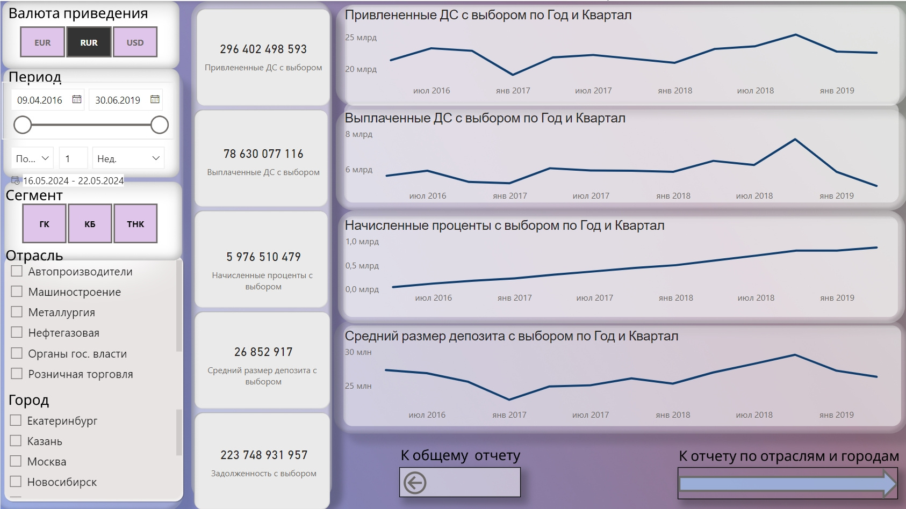
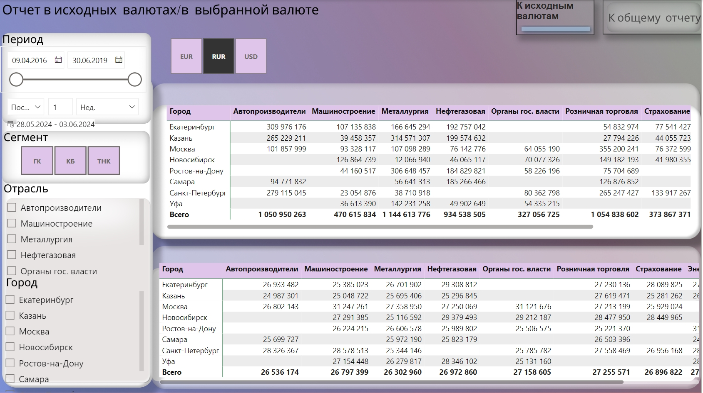
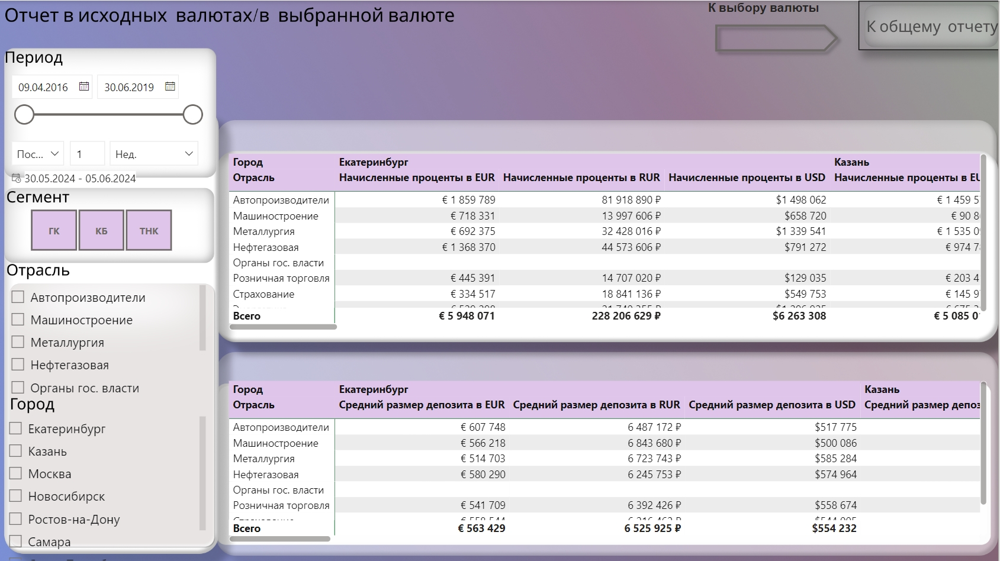

Разработка отчета об экономических результатах деятельности департамента пассивных операций банка, специализирующегося на привлечении денежных средств от крупных компаний из разных отраслей экономики: глобальные компании (ТНК), крупный бизнес (КБ) и государственные компании (ГК).
Цель проекта - на основе предоставленных данных требуется построить отчет в Power BI в соответствии с требованиями, описанными ниже.
Следующие требования:
- С описанием задачи, данных и всеми отчетами, которые необходимо получить можно ознакомиться по следуещей ссылке.
- Исходные данные содержатся в файлах:
Общий ход решения:
- Подготовка данных: получение таблицы "Движение ДС" из трех разных папок.
- Получение курсов валют и создание календаря с промежутком дат между первой и последней датой в таблице "Движение ДС".
- Получение таблицы "Клиенты" из трех папок.
- Анализ данных.
- Создание вспомогательных мер для анализа.
- Создание меры начисленных процентов в конкретной валюте.
- Создание мер в валюте приведения.
- Визуализация результатов.
Работа была выполнена с помощью инструментов Power BI: Power Query, Power Pivot, Power View и Figma. Подробную информацию по проекту и дашборты можно посмотреть ниже.
Отчет 1: общий отчет

Содержит следующие визуальные элементы:
- Четыре графика в 3-х валютах для Привлеченных ДС, Выплаченных ДС, Начисленных процентов, Средних размеров депозита.
- Пять многострочных карточек, которые выводят посчитанные меры.
- Срезы по городам, отраслям, периоду и сегменту (ГК, КБ, ТНК).
- Фон был подготовлен с помощью Figma и загружен в качестве холста.
При выборе города, отрасли, периода или сегмента происходит перерасчет всех мер в карточках и изменение графиков. Также есть кнопка "В валюту приведения" для перехода к отчету с выбранной валютой.
Отчет 2: отчет с выбранной валютой
Содержит следующие визуальные элементы:
- Четыре графика в выбранной валюте для Привлеченных ДС, Выплаченных ДС, Начисленных процентов, Средних размеров депозита.
- Пять карточек, которые выводят посчитанные меры, в выбранной пользователем валюте.
- Срезы по валюте приведения, городам, отраслям, периоду и сегменту (ГК, КБ, ТНК).
- Фон был подготовлен с помощью Figma и загружен в качестве холста.
При выборе валюты, города, отрасли, периода или сегмента происходит перерасчет всех мер в карточках и изменение графиков. Также есть две кнопки: "К отчету по отраслям и городам" для перехода к отчету 3 и кнопка "К общему отчету" для перехода к отчету 1.
Отчет 3: отчет по отраслям и городам
Содержит следующие визуальные элементы:
- Для отображения показателей в разрезе городов/отраслей выбраны матрицы, как наиболее информативные визуализации при минимально занимаемом месте.
- Срезы по валюте приведения, городам, отраслям, периоду и сегменту (ГК, КБ, ТНК).
- Фон был подготовлен с помощью Figma и загружен в качестве холста.
При выборе валюты, города, отрасли, периода или сегмента происходит перерасчет в матрице. Также есть две кнопки: "К исходным валютам" - и на данном отчете значения в матрицах будут расчитываться в трех валютах сразу. Ниже представлен скриншот. Это было сделано через закладки. Также на отчете есть кнопка "К общему отчету" для перехода в начало к отчету 1.
